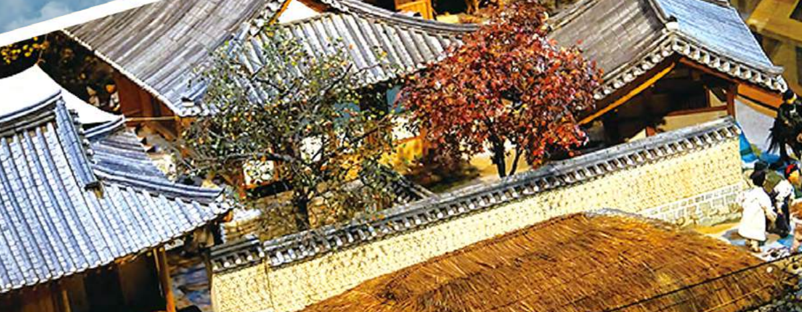
M3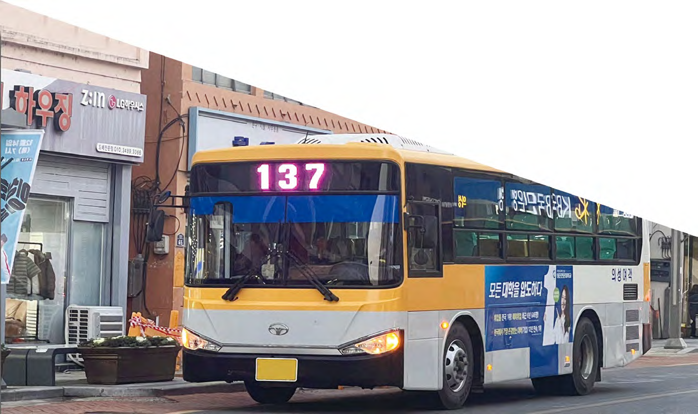
M4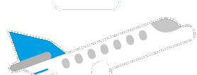
우리 지역에는 옛날부터 계절에 따라 다양한 세시 풍속이 있었습니다. 옛날의 풍습이 오늘날에는 어떻게 바뀌었는지 비교해 봅시다.
정월대보름우리 지역 사람들은 옛날부터 다양한 놀이를 즐겼습니다.
의성조문국박물관 민속유물 전시관에서는 우리 지역의 옛날 생활과 놀이 자료를 볼 수 있습니다. M14
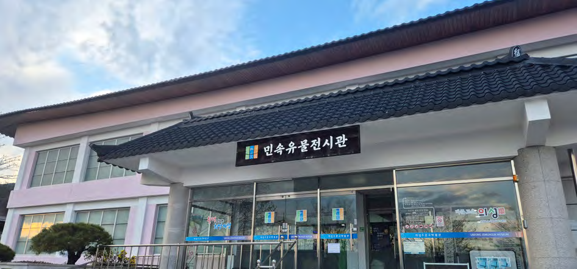
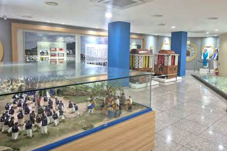
| 풍습 | 옛날(할머니·할아버지 어린 시절) | 오늘날(우리 가족) |
|---|---|---|
| 설날 | ||
| 정월대보름 | ||
| 추석 |
우리 지역 사람들이 옛날에 이용하던 교통수단을 알아보고, 그때 사람들이 어떻게 생활했을지 상상해 봅시다.
옛날에는 다리가 많지 않아 배를 이용해 강을 건너거나 물건을 옮기곤 했습니다. 그래서 강가에는 나룻배가 닿고 떠나는 나루터가 곳곳에 있었습니다.
의성군 단밀면 낙정리에 있던 낙정나루터는 낙동강에서 손꼽히는 큰 나루터였습니다. 강 건너편 상주와 의성을 잇는 길목이어서, 옛날부터 많은 사람과 물건이 이곳을 지나갔습니다. 나루 앞에는 배를 기다리는 사람들을 위한 밥집이 줄지어 있었다고 합니다.
1980년대 중반까지는 큰 나룻배에 버스와 경운기, 자전거까지 싣고, 여러 사람이 힘을 모아 배를 저어 강을 건넜습니다. 비가 많이 오거나 강물이 얼면 배를 띄울 수 없어 강 건너편에 가지 못하는 날도 있었습니다.
1986년 낙정나루터 옆에 낙단교가 놓이면서 사람들은 날씨와 상관없이 자동차를 타고 강을 건널 수 있게 되었습니다. 그 뒤로 이곳에서는 더 이상 배를 이용하지 않게 되었습니다. M16
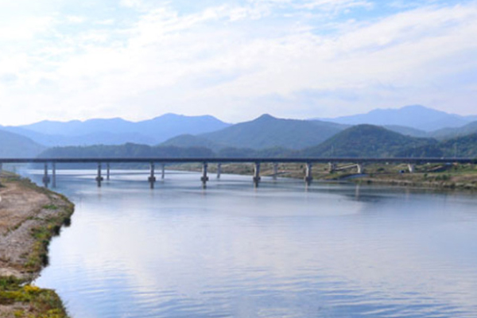
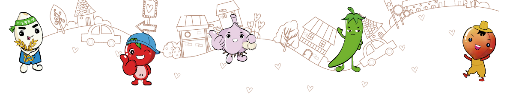
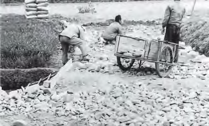
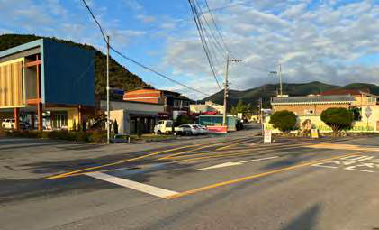
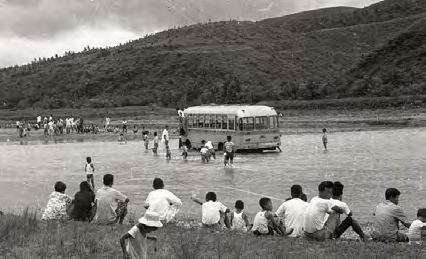
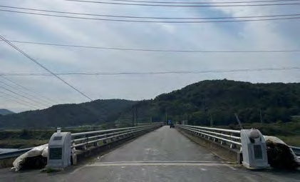
오늘날 우리 지역 사람들은 자동차, 기차, 버스 등 여러 교통수단을 이용합니다. 이러한 교통수단 덕분에 사람들은 먼 곳도 쉽고 빠르게 오갈 수 있습니다.
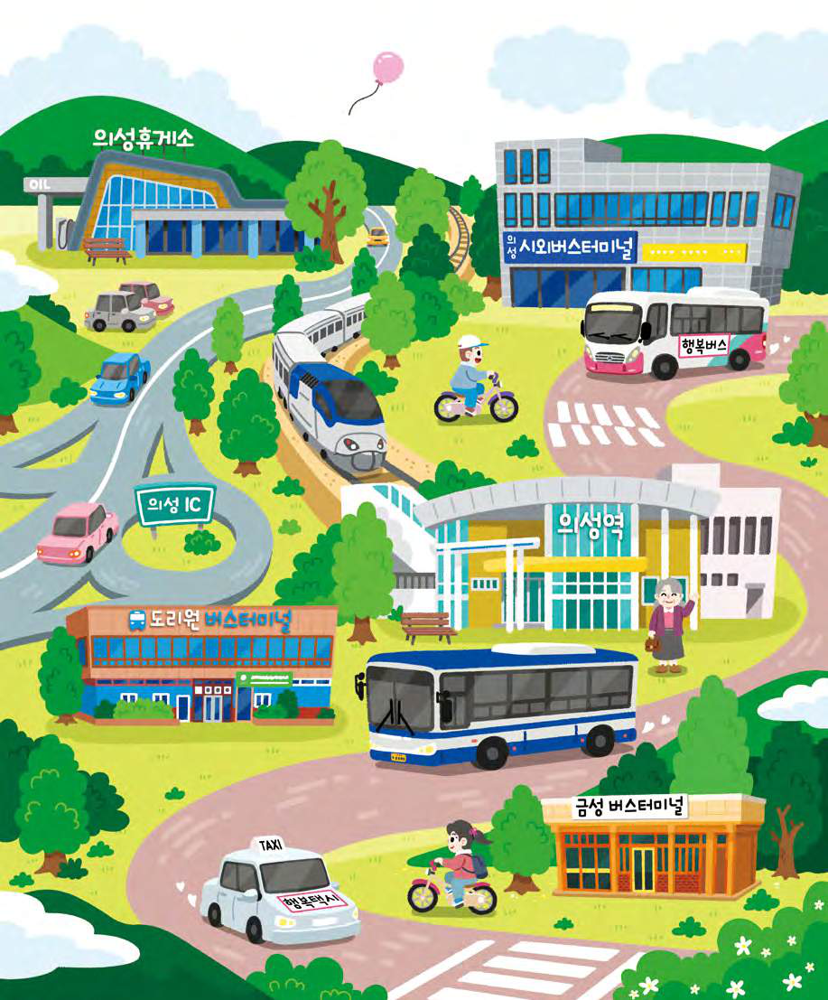
그림: 삽화가 황댄 M18우리 지역 사람들이 다른 지역에 갈 때 어떤 교통수단을 이용하는지 알아봅시다.
의성역은 1940년에 처음 문을 열었습니다. 2024년 12월에는 중앙선 복선 전철이 개통되어 고속 열차인 KTX-이음이 의성역에 서게 되었습니다. 덕분에 의성에서 서울과 부산까지 훨씬 빠르게 오갈 수 있게 되었습니다. M19
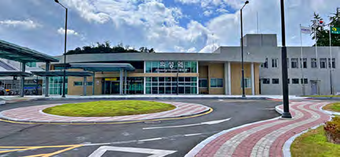
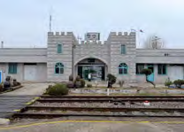
우리 지역 사람들이 다른 지역에 가거나 우리 지역 안에서 이동할 때 어떤 교통수단을 이용하는지 알아봅시다.
의성시외버스터미널은 의성역 가까이에 있으며, 대구, 동서울, 구미, 인천, 안동 등으로 가는 시외버스를 탈 수 있습니다. 이 밖에도 우리 지역에는 가음, 금성, 도리원, 안계 등에 버스 터미널이 있습니다. M23
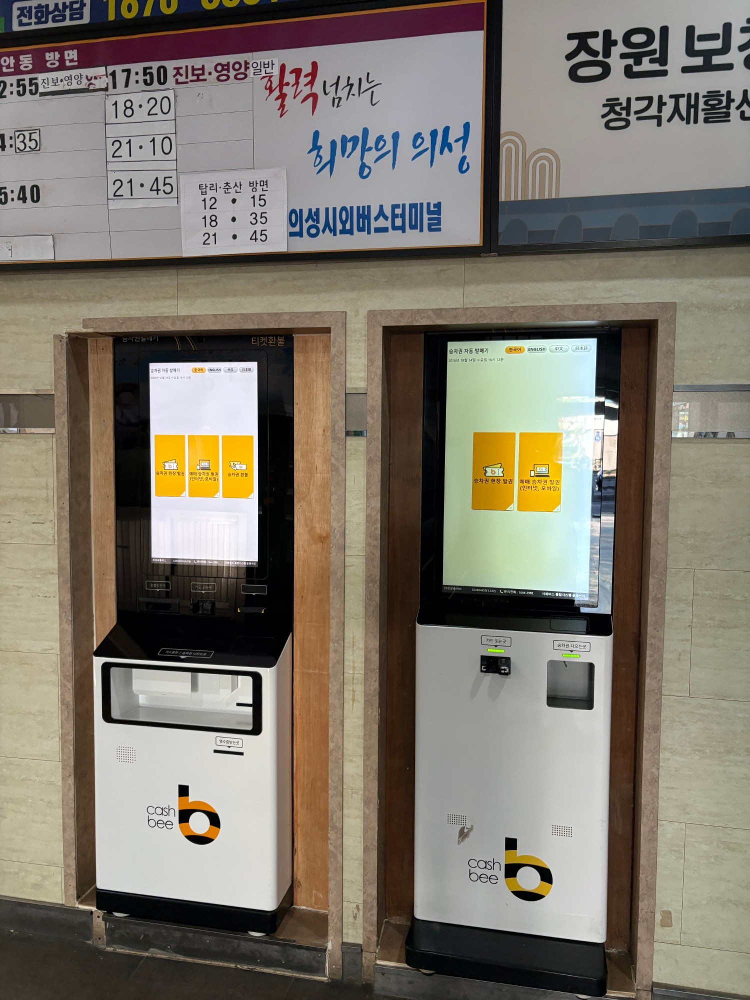
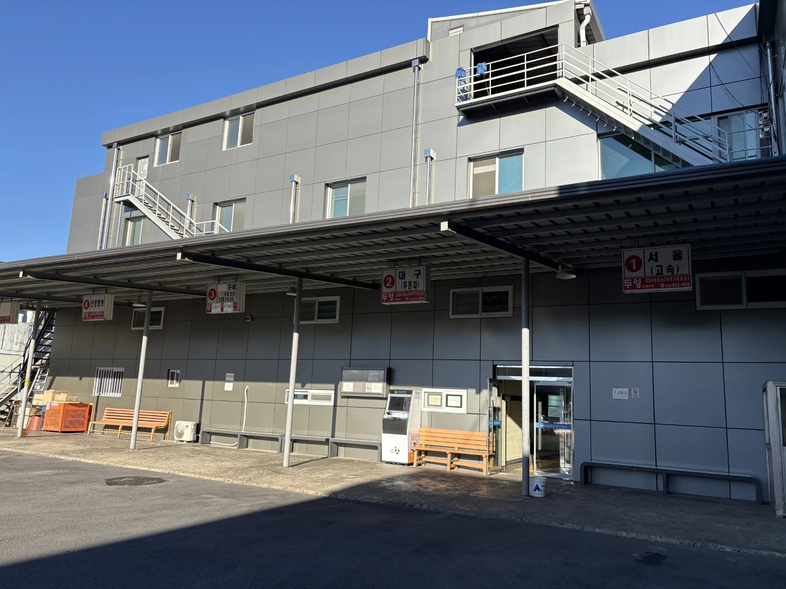
농어촌버스는 우리 지역 안에서 자유롭게 이동할 수 있게 해 주는 교통수단입니다. 버스마다 노선 번호가 있어서 번호만 보고도 어느 길로 가는지 알 수 있습니다. 또, 버스 정보 안내기나 전용 앱으로 버스가 몇 분 뒤에 오는지 실시간으로 확인할 수 있습니다.
2025년 1월부터는 누구나 농어촌버스를 무료로 탈 수 있게 되었습니다. 그 뒤로 버스를 타는 사람이 크게 늘었고, 읍내 시장을 찾는 사람도 많아졌습니다. M24
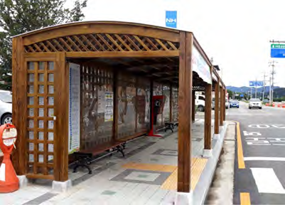
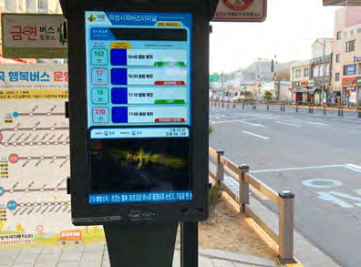
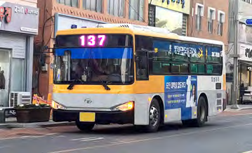
의성 농어촌버스인지 확인 M4행복버스는 농어촌버스가 자주 다니지 않는 마을에 사는 사람들이 더 편리하게 이동할 수 있도록 도와주는 작은 버스입니다.
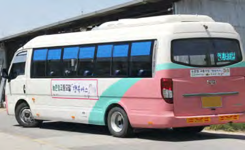
행복택시는 버스가 다니지 않는 마을의 주민들을 위한 택시입니다. 주민들은 적은 요금으로 택시를 탈 수 있습니다. 미리 정해진 날에 택시가 마을로 와서 주민들이 장을 보거나 병원에 갈 수 있도록 돕습니다.
앞으로 우리 지역에 생길 교통 시설을 알아보고, 그로 인해 생활이 어떻게 바뀔지 상상해 봅시다.
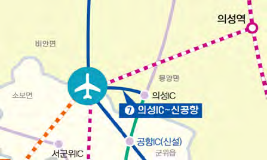
신공항이 지어지면 우리 지역에서 다른 나라로 가기가 쉬워지고, 공항으로 이어지는 새 도로와 교통수단도 생길 것으로 기대됩니다.
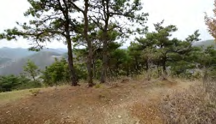
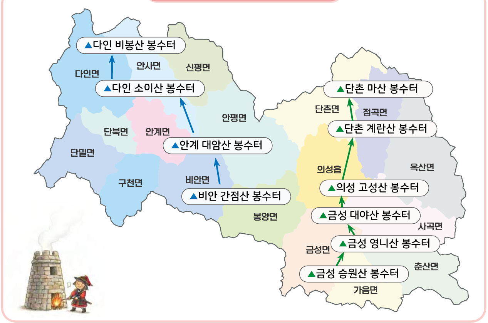
통신수단은 오랜 시간에 걸쳐 바뀌어 왔습니다. 소식을 주고받는 방법이 어떻게 달라졌는지 살펴봅시다. M29
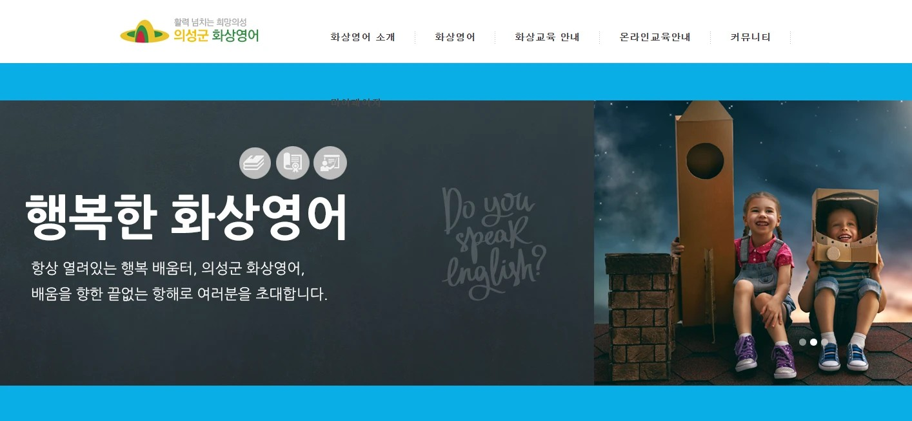
의성군 화상영어 누리집 갈무리(2026. 10.)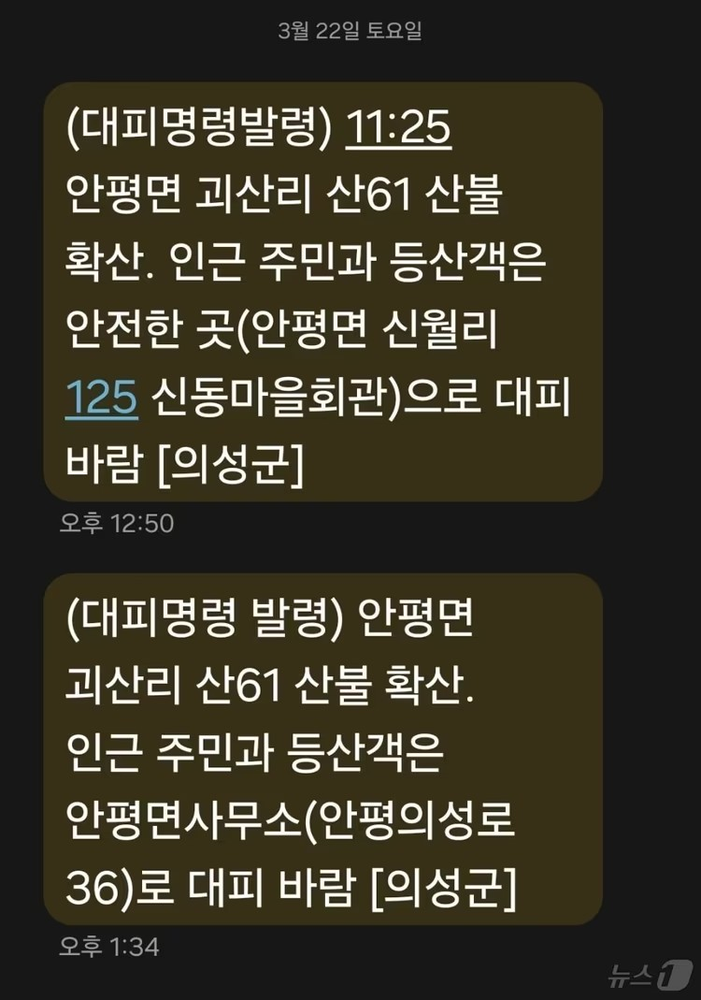
2025년 3월 의성 산불 때 주민들에게 보낸 대피 안내 재난 문자